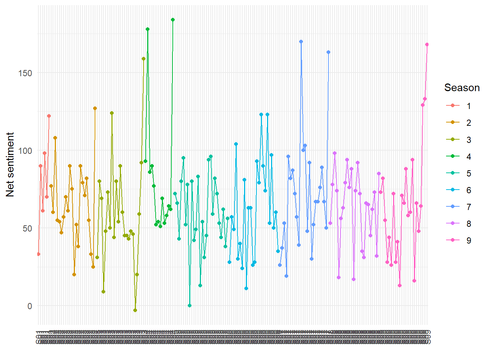
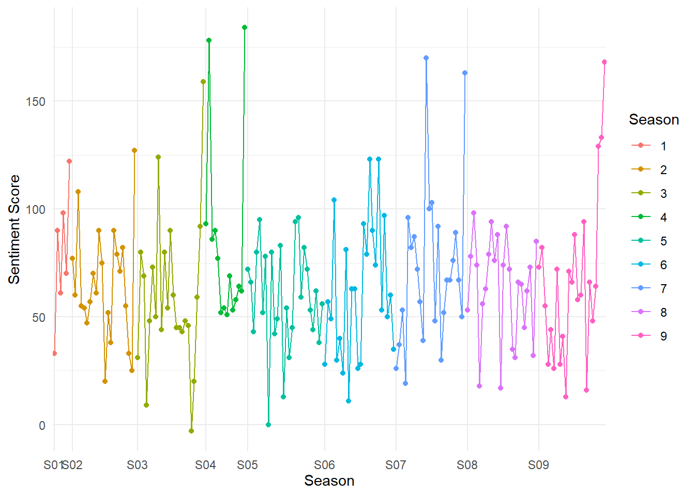
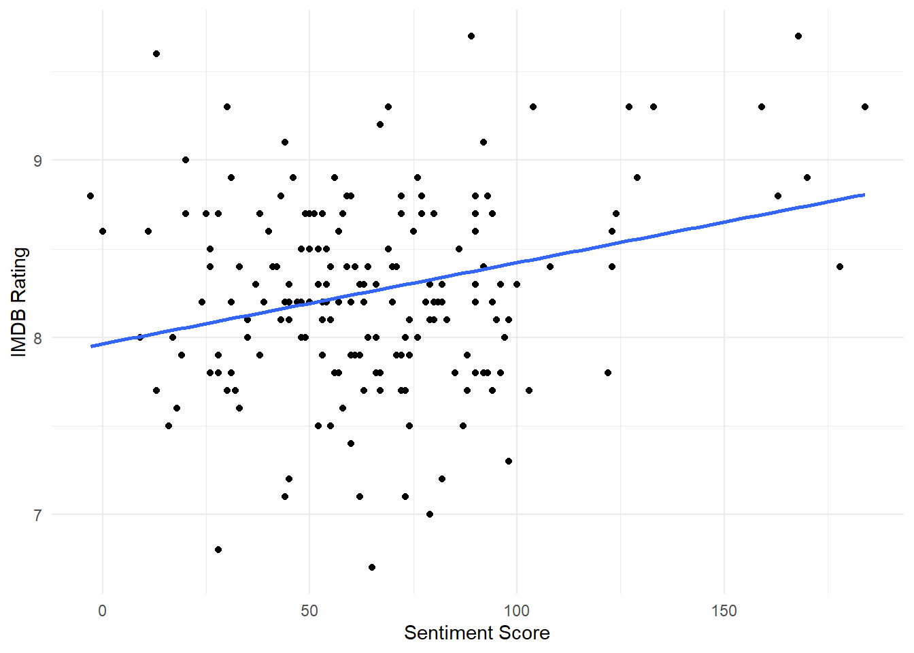
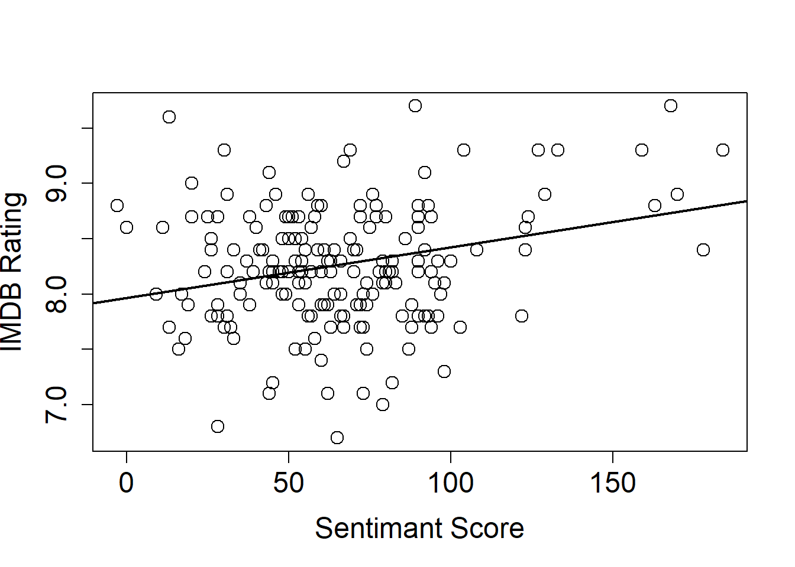
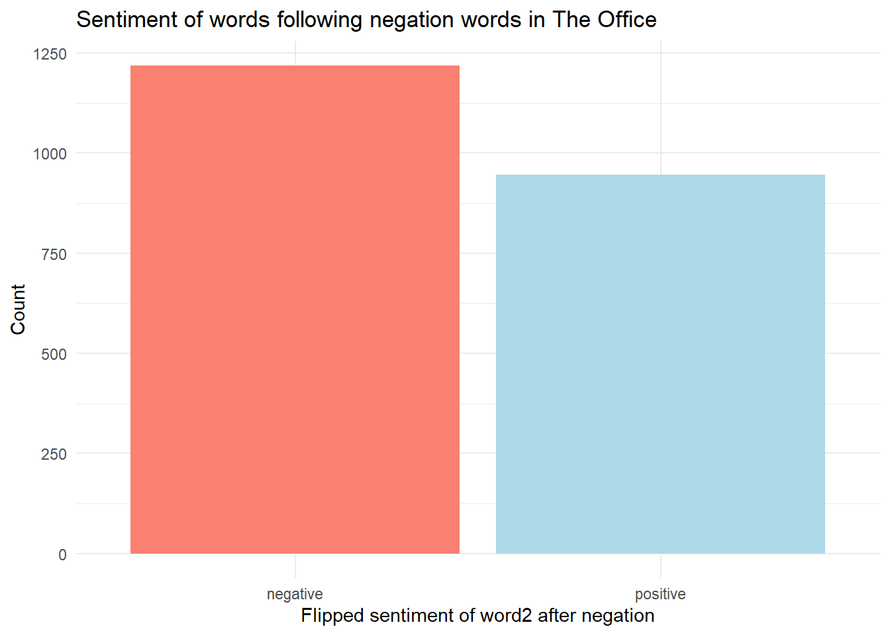
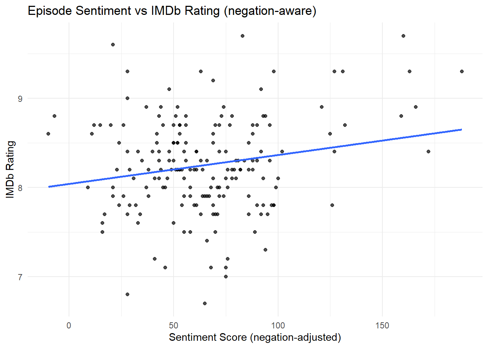

library(tidyverse)
library(tidytext)
library(schrute)
library(ggplot2)HW6
The Office
Let’s continue to work with The Office text from the schrute package.
Sentiment Analysis
Over Time
Calculate the sentiment score (positive - negative) for each episode, and plot this variable over time.
# theoffice |>
# mutate(text_lower = str_to_lower(text))
tidytext::sentiments# A tibble: 6,786 × 2
word sentiment
<chr> <chr>
1 2-faces negative
2 abnormal negative
3 abolish negative
4 abominable negative
5 abominably negative
6 abominate negative
7 abomination negative
8 abort negative
9 aborted negative
10 aborts negative
# ℹ 6,776 more rowstheoffice |>
mutate(season_episode = sprintf("S%02d E%02d", season, episode)) |> unnest_tokens(word, text) |> # Tokenize
inner_join(sentiments, by = join_by(word)) |> # Merge with Sentiment Lexicon
group_by(season, episode, season_episode) |>
summarize(pos_sent = sum(sentiment == "positive"),
neg_sent = sum(sentiment == "negative"),
sent_score = pos_sent - neg_sent,
.groups = "drop") |>
arrange(season, episode) |>
mutate(season_episode = factor(season_episode, levels = unique(season_episode))) |>
ggplot(aes(x = season_episode, y = sent_score, group = season, color = factor(season))) +
geom_line() +
geom_point() +
scale_x_discrete(labels = function(x) sub("^S(\\d+) E\\d+$", "S\\1", x)) +
theme_minimal() +
theme(axis.text.x = element_text(angle = 90, vjust = 0.5)) +
labs(x = NULL, color = "Season", y = "Net sentiment")
##this plot is very messy - can't read labels on x-axistheoffice |>
mutate(season_episode = sprintf("S%02d E%02d", season, episode)) |>
unnest_tokens(word, text) |> # Tokenize
inner_join(sentiments, by = join_by(word)) |> # Merge with Sentiment Lexicon
group_by(season, episode, season_episode) |>
summarize(pos_sent = sum(sentiment == "positive"),
neg_sent = sum(sentiment == "negative"),
sent_score = pos_sent - neg_sent,
.groups = "drop") |>
arrange(season, episode) |>
mutate(season_episode = factor(season_episode, levels = unique(season_episode))) |>
# Wrap the dataset so we can compute breaks inline (used copilot for help on this)
(\(df) {
# only want one label per season - going to put label on first episode per season
season_starts <- df |>
group_by(season) |>
slice_min(episode, with_ties = FALSE) |>
ungroup()
ggplot(
df,
aes(x = season_episode, y = sent_score, group = season, color = factor(season))
) +
geom_line() +
geom_point() +
#one label per season
scale_x_discrete(
breaks = season_starts$season_episode,
labels = sprintf("S%02d", season_starts$season)
) +
theme_minimal() +
theme(axis.text.x = element_text(angle = 0, vjust = 0.5)) +
labs(x = "Season", color = "Season", y = "Sentiment Score")
})()
By Rating
Create a scatterplot of the imdb_rating versus the sentiment score (positive - negative), where the case is again an episode. Decide whether a linear model is a good fit to this relationship (optional, if you have had modeling classes, what model looks best?). Comment on what you find.
#saving the changes above (sentiment score, season_episode) into new object
theoffice0 <- theoffice |>
mutate(season_episode = sprintf("S%02d E%02d", season, episode)) |>
unnest_tokens(word, text, drop = FALSE) |>
inner_join(sentiments, by = join_by(word)) |> # Merge with Sentiment Lexicon
group_by(season, episode, season_episode) |>
mutate(pos_sent = sum(sentiment == "positive"),
neg_sent = sum(sentiment == "negative"),
sent_score = pos_sent - neg_sent,
.groups = "drop") |>
arrange(season, episode) |>
mutate(season_episode = factor(season_episode, levels = unique(season_episode)))
theoffice0 |>
ggplot(aes(x = sent_score, y = imdb_rating)) +
geom_point() +
geom_smooth(method = "lm", se = FALSE) +
theme_minimal() +
labs(x = "Sentiment Score", y = "IMDB Rating")
plot(theoffice0$sent_score, theoffice0$imdb_rating,
pch = 1, cex = 1.5,
xlab = "Sentimant Score",
ylab = "IMDB Rating",
cex.lab = 1.5, cex.axis = 1.5)
regOffice <- lm(theoffice0$imdb_rating~theoffice0$sent_score)
abline(regOffice,lwd=2)
summary(regOffice)
Call:
lm(formula = theoffice0$imdb_rating ~ theoffice0$sent_score)
Residuals:
Min 1Q Median 3Q Max
-1.56205 -0.33914 -0.01164 0.36920 1.57627
Coefficients:
Estimate Std. Error t value Pr(>|t|)
(Intercept) 7.964e+00 5.771e-03 1379.98 <2e-16 ***
theoffice0$sent_score 4.583e-03 7.223e-05 63.46 <2e-16 ***
---
Signif. codes: 0 '***' 0.001 '**' 0.01 '*' 0.05 '.' 0.1 ' ' 1
Residual standard error: 0.5323 on 39990 degrees of freedom
Multiple R-squared: 0.09148, Adjusted R-squared: 0.09146
F-statistic: 4027 on 1 and 39990 DF, p-value: < 2.2e-16anova(regOffice)Analysis of Variance Table
Response: theoffice0$imdb_rating
Df Sum Sq Mean Sq F value Pr(>F)
theoffice0$sent_score 1 1140.9 1140.86 4026.6 < 2.2e-16 ***
Residuals 39990 11330.4 0.28
---
Signif. codes: 0 '***' 0.001 '**' 0.01 '*' 0.05 '.' 0.1 ' ' 1#Based on anova table, this model appears to be a good fit (p<<0.05)Sentiment Negation
Identify at least a few negations that change the sentiment values based on the text. Use this to recreate the graphs above (or do this first, then create the graphs).
#Sentiment Reversal RandJ - 5910
#common negation words : not, no, none, never, nothing, nobody, nowhere, neither, nor, hardly, seldom, rarely, scarcely
negation_words0 <- c("not", "no", "none", "never", "nothing", "nobody", "nowhere", "neither", "nor", "hardly", "seldom", "rarely", "scarcely")
#none, hardly, rarely, scarcely aren't in word1
negation_words <- c("not", "no", "never", "nothing", "nobody", "nowhere", "neither", "nor", "seldom")
# looking at count of word1:
theoffice0 |>
# filter(name == "Romeo and Juliet") |> # only RandJ
select(text) |>
unnest_tokens(bigram, text, "ngrams", n = 2) |> # Tokenize
# mutate(word1 = word(bigram,1)) # one option
separate(bigram, into = c("word1", "word2"), remove = F) |>
inner_join(sentiments, by = c("word2" = "word")) |> # Merge with Sentiment Lexicon
count(word1, sort = T) |>
filter(word1 %in% negation_words) |>
group_by(word1) |>
count(word1, sort = T)# A tibble: 9 × 2
# Groups: word1 [9]
word1 n
<chr> <int>
1 not 165
2 no 136
3 never 35
4 nothing 29
5 nobody 14
6 nor 2
7 neither 1
8 nowhere 1
9 seldom 1#in bigram, if word1 %in% negation_words & word2 is a sentiment (already filtered for this), then reverse the sentiment of word2
theoffice0 |>
# filter(name == "Romeo and Juliet") |> # only RandJ
select(text) |>
unnest_tokens(bigram, text, "ngrams", n = 2) |> # Tokenize
# mutate(word1 = word(bigram,1)) # one option
separate(bigram, into = c("word1", "word2"), remove = F) |>
inner_join(sentiments, by = c("word2" = "word")) |> # Merge with Sentiment Lexicon
count(word1, sort = T) |>
filter(word1 %in% negation_words) |>
head(10)# A tibble: 10 × 5
# Groups: season, episode, season_episode [10]
season episode season_episode word1 n
<int> <int> <fct> <chr> <int>
1 4 16 S04 E16 no 98
2 9 21 S09 E21 not 57
3 4 1 S04 E01 not 51
4 1 4 S01 E04 not 29
5 3 14 S03 E14 not 29
6 5 14 S05 E14 not 25
7 9 11 S09 E11 not 25
8 7 10 S07 E10 not 24
9 6 4 S06 E04 not 22
10 5 20 S05 E20 not 20# Adjust this to match your tokenization (see note on contractions below)
theoffice0 |>
select(text) |>
# Explicit token arg; consider strip_punct = FALSE to preserve "isn't"
unnest_tokens(bigram, text, token = "ngrams", n = 2) |>
separate(bigram, into = c("word1", "word2"), sep = " ", remove = FALSE) |>
# Join sentiment for the second word of the bigram
inner_join(sentiments, by = c("word2" = "word")) |>
# Keep only bigrams where word1 is a negation trigger
filter(word1 %in% negation_words) |>
# 🔧 Flip the sentiment label INSIDE mutate(), not piping into case_when()
mutate(
sentiment = case_when(
sentiment == "positive" ~ "negative",
sentiment == "negative" ~ "positive",
TRUE ~ sentiment
)
) |>
count(sentiment, sort = TRUE) |>
ggplot(aes(x = sentiment, y = n, fill = sentiment)) +
geom_col() +
labs(
title = "Sentiment of words following negation words in The Office",
x = "Flipped sentiment of word2 after negation",
y = "Count"
) +
theme_minimal() +
theme(legend.position = "none") +
scale_fill_manual(values = c("positive" = "lightblue", "negative" = "salmon"))
#this gives count of sentiments after negation
# --- Base unigram sentiment per episode (assumes `sentiments` is the 'bing' lexicon) ---
epi_base <- theoffice |>
mutate(season_episode = sprintf("S%02d E%02d", season, episode)) |>
unnest_tokens(word, text) |>
inner_join(sentiments, by = join_by(word)) |>
group_by(season, episode, season_episode) |>
summarise(
pos = sum(sentiment == "positive"),
neg = sum(sentiment == "negative"),
.groups = "drop"
)
# --- Negated bigrams per episode (negator + sentiment-bearing word2) ---
epi_neg <- theoffice |>
mutate(season_episode = sprintf("S%02d E%02d", season, episode)) |>
unnest_tokens(bigram, text, token = "ngrams", n = 2) |>
separate(bigram, into = c("word1", "word2"), sep = " ", remove = FALSE, fill = "right") |>
filter(!is.na(word2)) |>
filter(word1 %in% negation_words) |>
inner_join(sentiments, by = c("word2" = "word")) |>
group_by(season, episode, season_episode) |>
summarise(
negated_pos = sum(sentiment == "positive"),
negated_neg = sum(sentiment == "negative"),
.groups = "drop"
)
# --- Combine, compute adjusted score, and bring in IMDb rating ---
theoffice00 <- epi_base |>
full_join(epi_neg, by = c("season", "episode", "season_episode")) |>
mutate(
across(c(pos, neg, negated_pos, negated_neg), ~ tidyr::replace_na(.x, 0L)),
sent_score_raw = pos - neg,
sent_score = sent_score_raw - 2L * negated_pos + 2L * negated_neg
) |>
left_join(
theoffice |>
select(season, episode, imdb_rating) |>
distinct(),
by = c("season", "episode")
) |>
arrange(season, episode) |>
mutate(season_episode = factor(season_episode, levels = unique(season_episode)))
##final plot for question 3
theoffice00 |>
ggplot(aes(x = sent_score, y = imdb_rating)) +
geom_point(alpha = 0.7) +
geom_smooth(method = "lm", se = FALSE) +
theme_minimal() +
labs(
title = "Episode Sentiment vs IMDb Rating (negation-aware)",
x = "Sentiment Score (negation-adjusted)",
y = "IMDb Rating"
)
The plot shows that as sentiment score increases, IMDb rating also tends to increase. This is true in this plot and the previous plot, showing that the trend is true when you consider the effect of negation words on the sentiment score and when you do not consider negation words